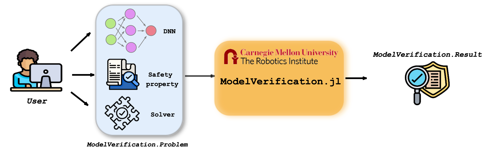
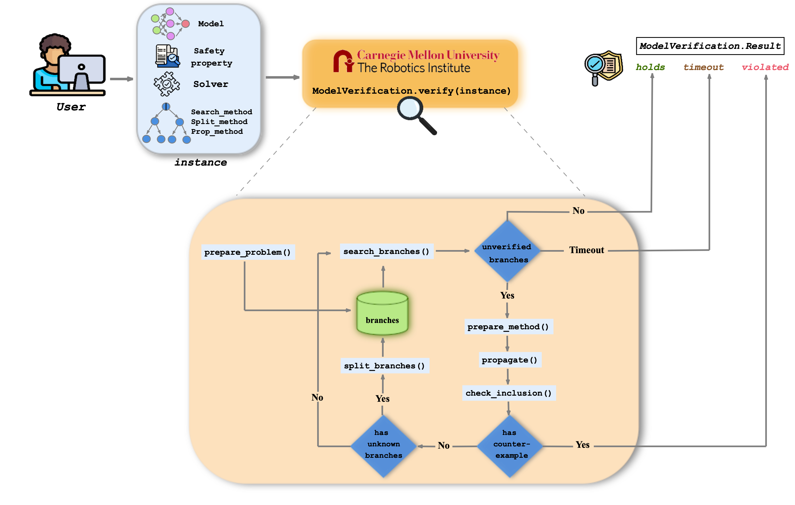

ModelVerification.jl
Introduction
Deep Neural Network (DNN) is crucial in approximating nonlinear functions across diverse applications, such as computer vision and control. Verifying specific input-output properties can be a highly challenging task. To this end, we present ModelVerification.jl, the only cutting-edge toolbox that contains a suite of state-of-the-art methods for verifying DNNs. This toolbox significantly extends and improves the previous version (NeuralVerification.jl) and is designed to empower developers and machine learning practioners with robust tools for verifying and ensuring the trustworthiness of their DNN models.
Key features:
- Julia and Python integration: Built on Julia programming language, ModelVerification.jl leverages Julia's high-performance capabilities, ensuring efficient and scalable verification processes. Moreover, we provide the user with an easy, ready-to-use Python interface to exploit the full potential of the toolbox even without knowledge of the Julia language (for future versions).
- Different types of verification: ModelVerification.jl enables verification of several input-output specifications, such as reacability analysis, behavioral properties (e.g., to verify Deep Reinforcement Learning policies), or even robustness properties for Convolutional Neural Network (CNN). It also introduces new types of verification, not only for finding individual adversarial input, but for enumerating the entire set of unsafe zones for a given network and safety properties.
- Visualization of intermediate verification results (reachable sets): ModelVerification.jl enables the visualization of intermediate verification results in terms of reachable sets. In particular, our toolbox allows to plot the impactful features for the verification process and the correlated output reachable set (layer by layer) and thus to define new specific input-output specifications based on this information.
- Verification benchmarks: Compare our or your verification toolboxes against state-of-the-art benchmarks and evaluation criteria (VNN-Comp 2023). ModelVerification.jl includes a collection of solvers and standard benchmarks to perform this evaluation efficiently.
Setup
This toolbox requires Julia v1.5 or later. Refer the official Julia documentation to install it for your system.
Installation
To download this toolbox, clone it from the Julia package manager like so:
pkg> add https://github.com/intelligent-control-lab/ModelVerification.jl/Develop the toolbox (for development)
Deprecated once project is done and should be changed to "Building the package".
Go to the toolbox directory and start the Julia REPL.
julia > ]
(@v1.9) > develop .
(@v1.9) > activate .
(@v1.9) > instantiateThis will enable development mode for the toolbox. The dependency packages will also be installed. Some of the important ones are listed below.
Overview of the toolbox

ModelVerification.jl receives input as a set consisting of:
- Model to be verified,
- A safety property encoded as input-output specifications for the neural network,
- The solver to be used for the formal verification process.
The toolbox's output varies depending on the type of verification we are performing. Nonetheless, at the end of the verification process, the response of the toolbox potentially allows us to obtain provable guarantees that a given safety property holds (or does not hold) for the model tested.
For more details on how the toolbox works, please refer to the tutorial below.
Quickstart
Here is a simple example for verifying that the user-given safety property holds for a small deep neural network (DNN) with a single input node, two hidden layers with two ReLU nodes, and a single output node. We use the formal verification results obtained through the reachability analysis to get a provable answer whether the safety property holds.
First, we load the relevant libraries and the ModelVerification.jl toolbox.
using ModelVerification
using Flux
using LazySetsFirst, load the model.
onnx_path = "models/small_nnet.onnx"
toy_model = ModelVerification.build_flux_model(onnx_path)Suppose we want to verify that all inputs in $\mathcal{X}=[-2.5, 2.5]$ are mapped into $\mathcal{Y}=[18.5, 114.5]$. We encode this safety property using convex sets, provided by LazySets.
X = Hyperrectangle(low = [-2.5], high = [2.5]) # expected out: [18.5, 114.5]
Y = Hyperrectangle(low = [18.5], high = [114.5]) # here we expect the property holdsNow, we construct a Problem instance. Note that ModelVerification.jl converts the .onnx model into a Flux model.
problem = Problem(toy_model, X, Y)Instantiate the solver, which in this case is CROWN. We also need search, split, and propagation methods in addition to the solver and Problem.
search_method = BFS(max_iter=100, batch_size=1)
split_method = Bisect(1)
use_gpu = false
lower_bound = true
upper_bound = true
solver = Crown(use_gpu, lower_bound, upper_bound)Finally, we can verify that the safety property holds for this simple example!
result = verify(search_method, split_method, solver, problem)
println(result)
println(result.status)CROWN verifies that the input-output relationship holds!
Tutorials
- Tutorials
- Example 1: Verifying a toy DNN with reachability analysis
- Example 2: Verifying a CNN for robustness safety property
- Example 3: Verifying a Deep Reinforcement Learning (DRL) policy for collision avoidance safety property
Toolbox Outline
 For detailed examples on how to use different functionalities provided by the toolbox, please refer to the Tutorials. The pages below will direct you to the respective documentation for each category.
- Flow
- Problem Outline
- Network
- Input-Output Specification
- Branching
- Propagation
- Solvers
- Attacks
- Helper Functions
Python Interface
[Python Interface](./pythoninterface.md) is currently in development._
ModelVerification.jl provides an interface with Python so that users who are not familiar with Julia can still use the toolbox via Python. Moreover, it provides converters in Python for converting between different neural network file formats, such as .onnx, .pb, .pt, .h5, and .nnet.